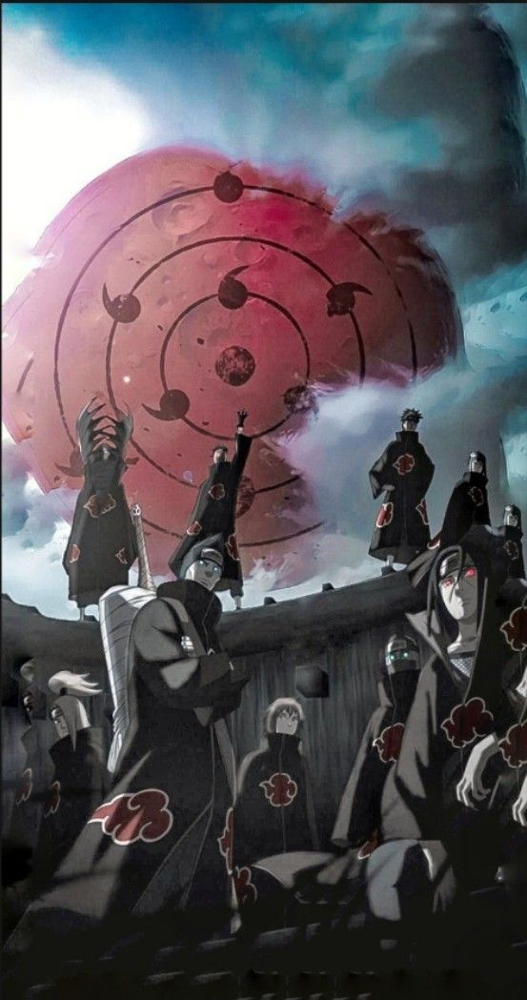

Single Post

Akatsuki Movement Detected
FEBRUARY 6, 2026The Akatsuki, a notorious organization of rogue ninja, has been spotted moving across the shinobi world. Known for hunting the powerful Tailed Beasts, its members possess extraordinary abilities and pose a serious threat to every hidden village. All ninja are advised to remain alert and report any suspicious activity immediately.
The Hidden Leaf Village has increased patrols and strengthened its defenses in response to the latest intelligence. Shinobi are preparing for possible encounters while working together to protect their comrades and maintain peace. Stay vigilant—the Akatsuki's next move could change the fate of the ninja world.